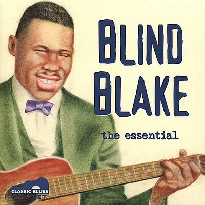

"Blind" Blake, cuyo nombre real era Arthur Blake, nació alrededor del año 1893 en Jacksonville, Florida y falleció alrededor del año 1933. Fue un cantante y guitarrista de blues estadounidense muy influyente, tradicionalmente considerado el creador del Estilo Piedmont, recibiendo la denominación de "El Rey de la guitarra ragtime".
Blind Blake grabó alrededor de 80 temas para la discográfica Paramount Records en los últimos años de la década de 1920 y en los primeros años de la década de 1930; fue uno de los guitarristas más prolíficos en su género con una amplia variedad de material musical grabado y publicado. Su complejidad al tocar, y el manejo intrínseco que hacia de la púa, inspiraron entre otros a Reverend Gary Davis, Jorma Kaukonen, Ry Cooder y Ralph Mctell. Blake es más conocido por el sonido distintivo de su guitarra, el cual era comparable al sonido y al estilo de un piano ragtime.
